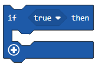
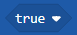
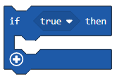
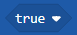
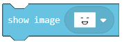
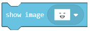
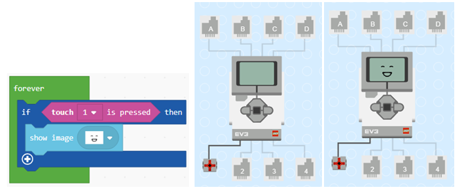
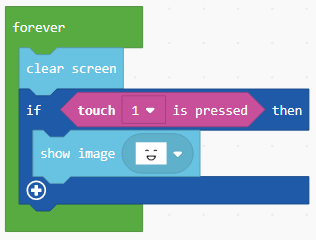
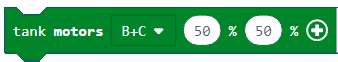
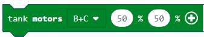

Задача-Щастлив или тъжен¶
Всички създадени програми досега бяха линейни-командите в тях бяха последователно изпълними, една след друга до края на програмата.
За разлика от тях, в които всички команди се изпълняват по веднъж, в алгоритмите, чрез които се взимат решения, в условните алгоритми, някои от командите ще бъдат изпълнени, други-не, в зависимост от това дали условието е осъществено.
Ще демонстрираме приложимостта на взимането на решение чрез блокове, създавайки програма, която ще показва различни изображения на екрана на EV3, в зависимост от това дали сензорът за докосване е натиснат. Ако е натиснат, ще се появи усмихнато лице, ако не е-тъжно лице.
В някои програми изпълнението на блоковете няма задължително да се изпълни в същата последователност, в която са поставени в програмата. Решаващи блокове се използват, щом трябва да изберем набор от блокове, които да се задействат. Кой сценарий ще бъде избран, зависи от това дали условието е изпълнено. За робота това условие е зависимо от информацията, получена от сензора.
За да създадем програма, която ще покаже усмихнато или тъжно лице, в зависимост от това дали сензорът за докосване е докоснат, или не, ще трябва да започнем нов проект.
В блока  (намиращ се в категория
(намиращ се в категория  ) ще завлечем блока  от категория . В полето  ще завлечем
) ще завлечем блока  от категория . В полето  ще завлечем  .
Задачата гласи, че когато сензорът е натиснат, програмата трябва да покаже усмихнато лице. Трябва да завлечем блока  от категория
.
Задачата гласи, че когато сензорът е натиснат, програмата трябва да покаже усмихнато лице. Трябва да завлечем блока  от категория  в разклонението YES.
в разклонението YES.
Видът на програмата, когато сензорът е натиснат, и симулацията:
Можем да видим, че дори когато пуснем бутона на сензора, изображението на щастливото човече остава на екрана на EV3 Brick-а. За да поправим тази грешка, ще използваме блока  .
.
Видът на програмата, щом сензорът е натиснат:
Когато сензорът не е натиснат, трябва да се показва тъжно лице. За да осъществим това, ще използваме разклонението “else”, натискайки знака  . В това разклонение ще добавим блока, който ще представя тъжното лице на екрана.
. В това разклонение ще добавим блока, който ще представя тъжното лице на екрана.
Крайният вид на кода при натискане или ненатискане на сензора в симулацията:

В този пример ще се изпълни горният ред на кода, ако бутонът е натиснат, и долният ред-ако бутонът не е натиснат.
За да илюстрираме това, ще дадем още един пример: трябва да създадем приложение, чрез което роботът да се движи напред, докато не види препятствие (на дистанция, по-малка от 30 см). Щом роботът види препятствието, той трябва да завие надясно, в опит да го заобиколи.
В блока (от категория|Loops|) ще завлечем от категория . В условното поле ще завлечем блока  , който е сравнителен оператор. За да създадем условието, според което дистанцията между робота и препятствието е по-малко то 30 см., ще сглобим блока
, който е сравнителен оператор. За да създадем условието, според което дистанцията между робота и препятствието е по-малко то 30 см., ще сглобим блока  . Щом препятствието е на по-малко то 30 см, роботът ще завие-иначе, той ще върви напред (ако условието не е изпълнено, т.е. роботът не вижда препятствието).
. Щом препятствието е на по-малко то 30 см, роботът ще завие-иначе, той ще върви напред (ако условието не е изпълнено, т.е. роботът не вижда препятствието).
Ще добавим блока за завиване  и за движение напред .
и за движение напред .
Крайният вид на кода

Свържете EV3 Brick-а с компютъра си чрез USB кабел и свалете .uf2 файла на своя компютър, натискайки бутона  . Завлечете файла на EV3 и той ще бъде готов за работа.
. Завлечете файла на EV3 и той ще бъде готов за работа.